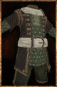

Dark Green Garb

Catégorie : Haut
Origine : Outward
Dark Green Garb is a type of Armor in Outward.
| Caractéristique | Valeur |
|---|---|
| Poids (kg) | 2 |
| Volume (L) | 3 |
| Construction | Souple |
| Achat (argent) | 4 |
| Vente (argent) | 2 |
| Protection | 0 |
| Résistance physique (%) | 2 |
| Résistance feu (%) | 0 |
| Résistance froid (%) | 0 |
| Résistance foudre (%) | 0 |
| Résistance décomposition (%) | 0 |
| Résistance éthéré (%) | 0 |
| Protection contre le froid | 2 |
| Protection contre la chaleur | 0 |
| Bonus physique (%) | 0 |
| Bonus feu (%) | 0 |
| Bonus froid (%) | 0 |
| Bonus foudre (%) | 0 |
| Bonus décomposition (%) | 0 |
| Bonus éthéré (%) | 0 |
| Coût de mana (%) | 0 |
| Coût d’endurance (%) | 0 |
| Vitesse (%) | 0 |
| Barrière | 0 |
| Réduction des délais (%) | 0 |
| Résistance à la corruption (%) | 0 |
| Résistance aux statuts (%) | 0 |
| Poches supplémentaires (kg) | 0 |